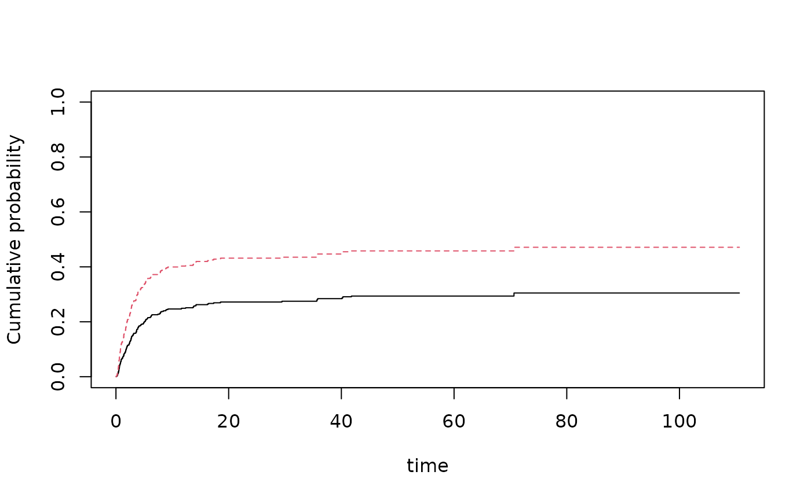
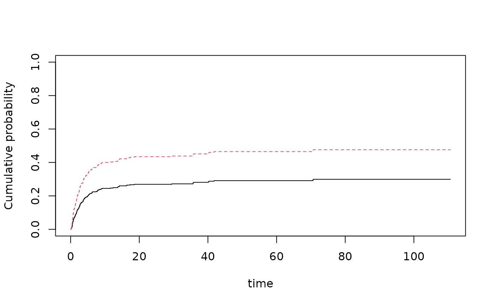
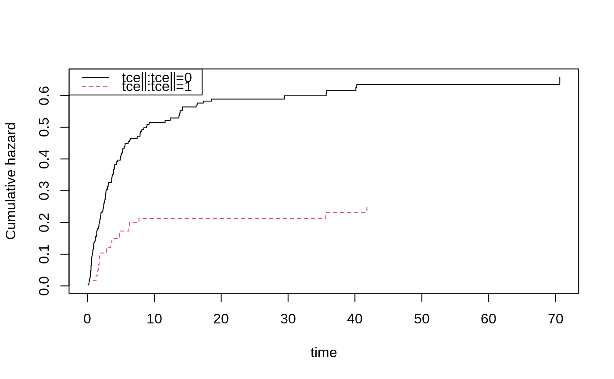

CIF logistic for propodds=1 default CIF Fine-Gray (cloglog) regression for propodds=NULL
cifreg( formula, data = data, cause = 1, cens.code = 0, cens.model = ~1, weights = NULL, offset = NULL, Gc = NULL, propodds = 1, ... )
| formula | formula with 'Event' outcome |
|---|---|
| data | data frame |
| cause | of interest |
| cens.code | code of censoring |
| cens.model | for stratified Cox model without covariates |
| weights | weights for Cox score equations |
| offset | offsets for cox model |
| Gc | censoring weights for time argument, default is to calculate these with a Kaplan-Meier estimator, should then give G_c(T_i-) |
| propodds | 1 is logistic model, NULL is fine-gray model |
| ... | Additional arguments to lower level funtions |
For FG model: $$ \int (X - E ) Y_1(t) w(t) dM_1 $$ is computed and summed over clusters and returned multiplied with inverse of second derivative as iid.naive. Where $$w(t) = G(t) (I(T_i \wedge t < C_i)/G_c(T_i \wedge t))$$ and $$E(t) = S_1(t)/S_0(t)$$ and $$S_j(t) = \sum X_i^j Y_{i1}(t) w_i(t) \exp(X_i^T \beta)$$
The iid decomposition of the beta's, however, also have a censoring term that is also is computed and added to UUiid (still scaled with inverse second derivative) $$ \int (X - E ) Y_1(t) w(t) dM_1 + \int q(s)/p(s) dM_c $$ and returned as iid
## data with no ties data(bmt,package="timereg") bmt$time <- bmt$time+runif(nrow(bmt))*0.01 bmt$id <- 1:nrow(bmt) ## logistic link OR interpretation ll=cifreg(Event(time,cause)~tcell+platelet+age,data=bmt,cause=1) plot(ll)## Fine-Gray model llfg=cifreg(Event(time,cause)~tcell+platelet+age,data=bmt,cause=1,propodds=NULL) plot(llfg)sllfg=cifreg(Event(time,cause)~strata(tcell)+platelet+age,data=bmt,cause=1,propodds=NULL) plot(sllfg)